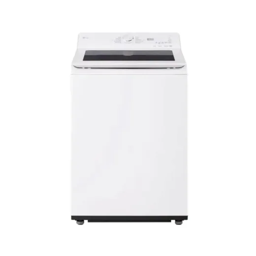
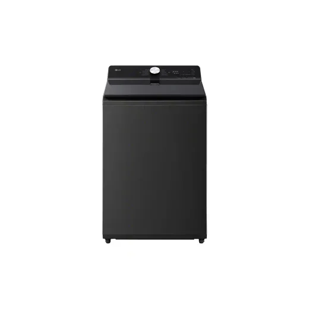
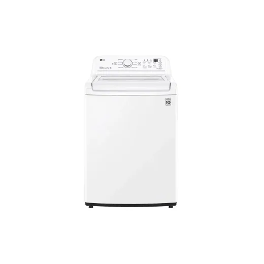
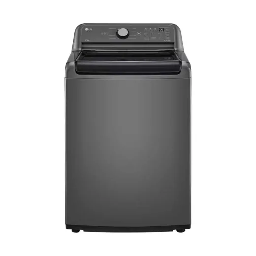
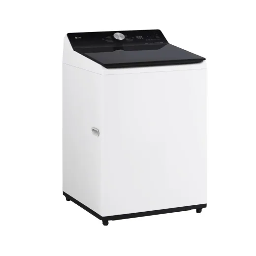
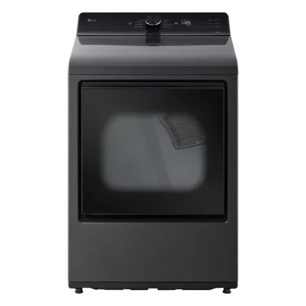

Inicio › Lavadoras y secadoras

LG · Modelo WT16WVTM
Lavadora LG · 16 kg · Carga superior · WT16WVTM
L 14,994
En Walmart
Precio en cada tienda
| Tienda | Precio | Antes | Disponibilidad | |
|---|---|---|---|---|
| Walmart | L 14,994 | — | Disponible | Ver en tienda › |
Precios referenciales tomados de cada tienda el 21 de noviembre de 2026. El precio válido es el que muestra la tienda al comprar.
Historial de precio
Lo seguimos desde el 1 de noviembre. Precio más bajo registrado: L 14,994 en Walmart (1 de noviembre), igual que hoy. El precio no ha cambiado en ese tiempo.
Características
| Color | Surtido |
|---|---|
| Marca | LG |
| Medida de altura | 84 cm |
| Medida de ancho | 54 cm |
| Medida de peso | 30 kg aproximadamente |
| Modelo o serie del producto | WT16WVTM |
| País de Origen - Ensamblaje | Estados Unidos |
| Capacidad | 16 kg |
| Diseño | Liso |
| Material | Acero inoxidable |
| Requiere ensamblaje | No |
| Voltaje | 110V |
| Watts de potencia | 900W |
| Ahorro de energía | Sí |
| Capacidad de lavado/Secado | 16 kg |
Descripción
Disfruta de la Lavadora automática LG WT16WVTM de 16 kg con carga superior, un equipo perfecto para familias pequeñas y medianas en su rutina de lavado semanal. Su motor Smart Inverter reduce la vibración y el consumo de energía, mientras sus programas de lavado protegen todo tipo de prendas en cada ciclo. Su capacidad facilita lavar sábanas, toallas y ropa de uso diario sin necesidad de realizar demasiadas tandas, ahorrando tiempo en el área de lavandería. Su diseño de carga superior permite introducir y retirar la ropa de forma cómoda, simplificando el manejo del equipo durante el día a día. Es una opción pensada para quienes buscan eficiencia práctica en el hogar.
Otros lavadoras y secadoras LG
 Lavadora LG · 25 kg · NegroL 14,999En Lady Lee
Lavadora LG · 25 kg · NegroL 14,999En Lady Lee- Lavaplatos LG QuadWash™ 24" Acero Inoxidable LDFN3432TL 14,999En Lady Lee

Lavadora LG · 25 kg · WT25EWTX6L 14,490En 3 tiendas · más barato en Diunsa
Lavadora LG · 23 kg · WT23OBTX6L 13,490En 2 tiendas · más barato en Diunsa
Lavadora LG · 21 kg · WT21WT6HKAL 12,999En Lady Lee
Lavadora LG · 21 kg · WT21MT6HKAL 12,995En 2 tiendas · más barato en Gallo más Gallo
Lavadora LG · 22 kg · WT22EWTX6L 12,490En 2 tiendas · más barato en Diunsa
Secadora LG · 25 kg · A gasL 17,499En Lady Lee